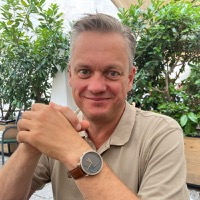

01
Tænk, før I handler
Fart uden retning er ikke produktivitet. Før en agent rører en linje kode, skal I vide, hvad I bygger og hvorfor — klart nok til at kunne vurdere, om resultatet er rigtigt.
Svage specifikationer og processer giver hurtigere, men stadig svage, resultater. De fleste organisationer sætter AI ind i den gamle proces og får friktion, ikke resultater. Consid bygger fundamentet, der fjerner friktionen. Så kan I sætte farten op.
To organisationer kan bruge det samme AI værktøj og få vidt forskellige resultater. Forskellen er sjældent modellen, men fundamentet: et klart udgangspunkt og specifikationer, agenten kan arbejde efter. Og mennesker ved hver beslutning, der ændrer kurs. Ikke kontrol bagefter — styring bygget ind fra starten
Hvor de fleste er
Folk bruger AI hver dag, hver på sin måde. Output bliver kopieret ind i dokumenter og kode. Det går hurtigere — men resultatet ligner det, I lavede i forvejen.
Hvor de færreste er
Ikke fordi de har bedre AI. Fordi de har en leverancemodel: arkitektur før agenten starter, specifikationer den arbejder efter, og et menneske ved de beslutninger, der betyder noget.
Eller DAD, er Consids model for retning med AI.
I er i kontrol ved de vigtige beslutninger.
Fundamentet står klart, før agenten starter.
Specifikationer, den arbejder efter.
I er i kontrol ved hver beslutning, der tæller.
Vi starter, hvor I står, på jeres niveau.
Vælg det, der ligner jer mest. Vi viser, hvor I er, hvad vi ser der typisk gør ondt og hvad vi gør ved det. Agenterne eksekverer inden for den retning, I sætter.
I starter, hvor I er, niveau 0 til 2, typisk. Niveau 3 er ikke et mål i sig selv. Det er der, hvor agenterne kan eksekvere alene, fordi fundamentet bærer det.
Fart uden retning er ikke produktivitet. Før en agent rører en linje kode, skal I vide, hvad I bygger og hvorfor — klart nok til at kunne vurdere, om resultatet er rigtigt.
Tanker, der ikke er skrevet ned, findes ikke for en agent. Specifikationer, arkitekturbeskrivelser og beslutningslog er ikke overhead. Det er partituret, orkestret spiller efter.
Viden, der ikke er skrevet ned, findes ikke for en agent. Når praksis står i en specifikation, er den tilgængelig, ikke kun for én person, men for alle, der arbejder med den.
Dirigenten spiller ikke selv hvert instrument. Beslutningspunkter er de steder i flowet, hvor et menneske godkender retning, arkitektur og intention, før eksekveringen fortsætter.
Store ændringer er svære at vurdere og svære at rulle tilbage. Hold hvert skridt lille nok til, at et menneske kan gennemskue det — og reversibelt nok til at kunne fortrydes uden konsekvenser.
Directed Agentic Delivery er ikke et salgsargument, det er sådan, vi selv arbejder. Det, vi bygger hos jer, bliver hos jer: en ny arbejdsgang og et værktøj, jeres folk kan fortsætte med.

Spørgsmål, vi får ofte
Vi har ikke styr på arkitekturen. Er vi for sent på den?
Nej. De fleste starter præcis der. Pointen med niveauerne er, at I ikke skal have styr på alt, før I begynder — I skal bare vide, hvilket ét skridt der giver mening som det næste.
Vores udviklere bruger allerede AI uden fælles regler. Skal vi stoppe dem?
Nej. At forbyde det flytter bare brugen ud af syne. Vi lægger rammer omkring det, der allerede sker: arkitektur-checkpoints, specifikationer at bygge efter og faste steder, hvor et menneske siger god for retningen.
Hvor lang tid tager det at komme fra niveau 1 til niveau 2?
Det afhænger mere af jeres dokumentation end af jeres teknologi. Har I opdateret arkitektur og klare specifikationer, er det måneder. Skal det bygges fra bunden, er det længere — og det er præcis det, en Agentic Development Review sætter tal på.
Skal vi vælge en bestemt model eller platform?
Nej. Leverancemodellen er det, der holder — modellerne skiftes ud. Vi arbejder med det, I har, og bygger så I kan skifte uden at starte forfra.
Hvordan forholder det sig til EU AI Act?
Styring og compliance er den samme øvelse set fra to sider. Når beslutninger, ejerskab og specifikationer er skrevet ned, kan I svare på hvem, hvad og hvorfor — også bagudrettet. Det er indholdet i vores AI Compliance Review.
45 minutters arbejdssession med en af vores AI-praktikere. Vi kortlægger, hvor Directed Agentic Delivery giver mening hos jer — og hvor I starter.